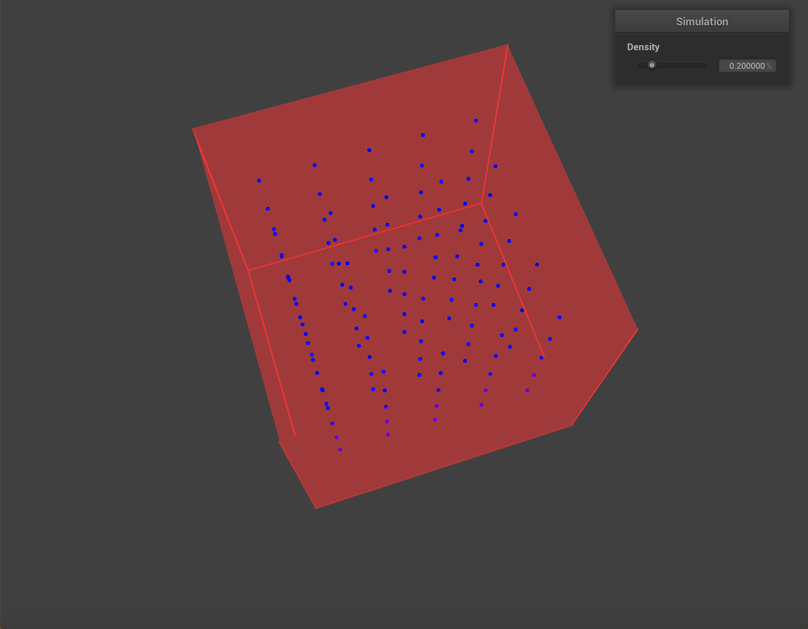

Our group is working on a fluid simulation. We are aiming to create a simulation for fluids with a density control to adjust the density of the fluid. In this way, we can test different kinds of fluids with the same simulation.
We adapted our project 4 code to create a starting point for our fluid simulation. However, project 4 simulated the movement of a cloth, which differs from a fluid in many key ways. We changed the way we create our simulation in the following ways:
After this, we implemented the simulation loop in the following research paper (https://mmacklin.com/pbf_sig_preprint.pdf). This simulation loop contains checks for constraints on a fluid, including incompressibility, tensile instability, vorticity, and viscosity.
We have multiple point masses, moving independently of each other. Our simulation has rendering changes to better display the movement of a fluid, as well as a density control for the fluid. We have implemented our simulation loop; however, the position function of our point masses diverges after a few time steps, which results in large point displacements.
|

|

|
We had three main goals in our plan. Our progress can be summarized as the following:
This is the core fluid simulation paper we referenced. We implementation the simulation loop> and fluid constraints in this paper.
We referenced this paper for assistance with implementing vorticity constraints. The paper "Position Based Fluids" (above) referenced this paper in their vorticity constraint calculations.
We used some of the kernels included in this link.